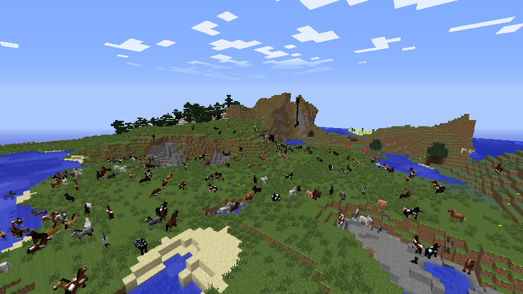

How to Find and Tame Horses in Minecraft
By: Elizabeth
Introduction
Horses are noble creatures in the world of Minecraft, providing players with a reliable source of transportation and allowing them to explore the vast landscapes that the game has to offer. However, finding and taming horses can be a daunting task for newcomers, and even experienced players may struggle to locate the perfect mount. Fear not, for this guide will provide you with all the tips and tricks you need to find and tame the best horses in Minecraft.
Previous Subheading Titles:
- Discovering the World of Minecraft's Horses
- What Makes Horses Unique Mounts in Minecraft?
When it comes to finding horses in Minecraft, it all depends on where you look. While they can occasionally spawn in any biome, there are certain areas where they are more likely to appear. For example, plains biomes and savannah biomes have a higher probability of generating horses than other areas. Additionally, horses tend to spawn in groups, so keep an eye out for multiple horses in the same area.
Once you have located a group of horses, the process of taming them can begin. This involves repeatedly mounting the horse until it becomes comfortable with you, which can take some time. A gentle approach is necessary, as rushing the process can result in the horse bucking you off and running away.
However, don't be discouraged if your first attempts at taming are unsuccessful. Offering the horse food, such as apples or hay bales, can help speed up the process and increase their affection towards you. With patience and perseverance, you'll soon have a trusty steed by your side.
In conclusion, horses in Minecraft are valuable creatures that can make your gameplay experience all the more enjoyable. By understanding where to find them and the proper techniques for taming them, you'll be well on your way to becoming a horse-riding expert. So saddle up and let the adventure begin!
ad space
Locating Horses
Horses add a certain charm and practicality to Minecraft. They're faster and provide more storage than simply walking or using a boat. However, finding them can be a challenge. Fortunately, with a few tips and tricks, you can easily locate your very own herd of horses.
First things first, horses spawn in specific biomes. Specifically, they spawn in plains, savannas, and desert biomes. Plains biomes are the most common, so if you're looking for a quick and easy spot to find horses, this is probably your best bet. Keep in mind that horses usually spawn in groups, so if you're patient enough, you may end up finding an entire herd.
Another way to locate horses is to listen for their sound. Horses make a distinctive neighing sound, which is audible from a distance. If you hear this sound, there's a good chance horses are nearby. If you're having trouble locating them, try climbing to a high point and listening for the sound again.
Finally, you can try using a spawn egg. If you have access to a spawn egg, you can simply use it to summon a horse directly. However, this is not a practical solution for survival mode, as spawn eggs are not easily obtainable.
In conclusion, finding horses in Minecraft takes a bit of time and patience, but the rewards are well worth it. Whether you're looking to speed up your travel time, or add a new member to your animal farm, horses can be a valuable addition to any Minecraft world. So keep searching, and happy horse-taming!
ad space
Taming Horses
Minecraft has become one of the most loved games in the world, attracting millions of players of all ages. It is filled with exciting adventures and quests that can keep you glued to your screen for hours on end. One of these quests is finding and taming horses, which can be quite tricky, but it’s worth every effort.
Taming horses is undoubtedly one of the most enjoyable aspects of Minecraft since it helps you travel faster and carry more load. Finding and taming horses is not as easy as it sounds, but this subheading will provide an informative guide on your quest.
In Minecraft, the first step to taming horses is finding them. Horses spawn randomly throughout the world, but they are more likely to spawn in specific biomes like plains, savannas, and deserts. Once you have found a horse, you must have the required equipment, like a saddle, to make the horse rideable.
After you have the necessary equipment, you can begin taming the horse. Taming involves mounting the horse and trying to ride it. At first, the horse will buck you off, but after several attempts, the trust bar will increase, indicating that the horse is now tamed.
In conclusion, taming horses requires patience, persistence, and a few supplies, but the result is worthwhile. Whether you are building an army for your Minecraft war game, or need a reliable ride to explore different biomes, taming horses is a must-learn skill. With this subheading’s insightful guide, you can take the necessary steps to find and tame horses, adding to your Minecraft adventures.
ad space
Caring for Horses
Caring for Horses: Tips and Tricks for Raising Your Minecraft Companion
Now that you've found and tamed your very own horse in Minecraft, it's time to make sure you provide the best care possible. Just like real life, horses in Minecraft require proper feeding, grooming, and attention to ensure they stay healthy and happy.
First and foremost, make sure your horse always has enough food. Hay bales, golden carrots, apples, and wheat are all great options to keep your horse's hunger at bay. Also, keep in mind that different foods have different effects on your horse. For example, golden apples can heal your horse's health, while apples and carrots will only restore their hunger.
Another essential aspect of horse care is grooming. Keeping your horse clean not only makes them look better but also helps prevent health issues like skin infections. Use a brush, shears, or even a bucket of water to tidy up your horse, and be sure to remove any excess armor or saddles before beginning.
Finally, don't forget to pay attention to your horse's emotions. Horses in Minecraft have personalities and can become attached to their owners. You can improve your horse's trust level by feeding them, riding them often, and avoiding harmful actions like attacking other animals while they're nearby.
In summary, caring for your Minecraft horse can be just as rewarding as taming it in the first place. By following these simple tips and tricks, you can ensure that your equine companion remains happy, healthy, and always ready for adventure.
ad space
Breeding Horses
Whether you're looking to create a strong steed to ride into battle or simply want a loyal companion to explore the vast world of Minecraft with, breeding horses is an important aspect of gameplay. Not only can breeding horses result in a higher quality of equine partner, but it can also unlock certain achievements and give players access to unique variations of these majestic creatures.
Before we dive into the process of breeding horses in Minecraft, it's important to understand the basics of taming them. Patience is key when approaching a wild horse, as sudden movements or loud noises can spook and cause them to bolt. Slowly approaching and quietly taming a horse with food, such as apples or carrots, can help build trust and make the taming process easier.
Once you have a horse that has been successfully tamed, breeding becomes the next step. Breeding requires two horses, with at least one being tamed and both being well-fed. Feeding horses golden apples or golden carrots boosts their readiness to breed, and they will enter the mating process when both are nearby and fed.
Upon successful breeding, a baby horse will be born with the traits of their parents. Specifically, baby horses have a 50/50 chance of inheriting either parent's coat color and can also inherit more desirable traits such as increased speed or the ability to jump higher.
Breeding horses in Minecraft is a feature that can help players create unique, high-quality mounts with desirable traits. While breeding is a process that requires patience and resources, the resulting offspring can help novice and veteran players alike create an exciting and loyal companion for their Minecraft adventures.
ad space
Conclusion
As you journey through Minecraft, you will find yourself in need of a trusty steed to help you explore the vast terrain. Taming horses may seem like an intimidating feat, but with these helpful tips, you’ll have a steed of your own in no time.
First, it’s important to know where to look for horses. They can typically be found in plains, savannas, and extreme hills biomes. Once you’ve spotted a wild horse, you’ll need to approach it slowly while holding an empty hand. Right-click on the horse to mount it, but be prepared to be bucked off a few times before the horse starts to trust you.
To tame the horse, you’ll need to repeatedly mount and dismount it until it no longer bucks you off. You can speed up this process by feeding the horse sugar, wheat, hay bales, apples, or golden apples. Once you have tamed the horse, you can equip it with a saddle and ride it wherever you want to go.
In conclusion, taming horses in Minecraft is a rewarding experience that will allow you to explore your virtual world with ease. Remember to approach the horses slowly, feed them treats, and be patient as you work to gain their trust. With a little effort, you’ll have a trusty steed by your side in no time. So saddle up and explore the world of Minecraft with your new companion!
ad space